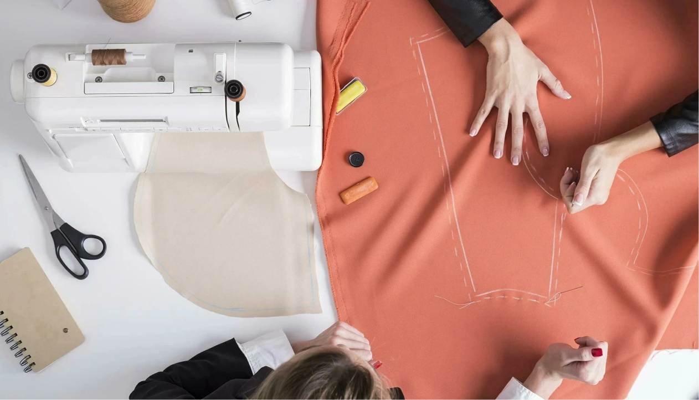

Экологичная фабрика

Основные правила:
Правило №1
Натуральные материалы
Правило №3
Восстановление одежды
Важно!
*Экологическое создание одежды значительно снижает негативное
воздействие модной индустрии на людей и окружающую среду.
Ниже приведены некоторые из лайфхаков, которые помогут вам
наладить экологичное производство и продажу одежды
В последние годы все больше людей обращают внимание на то, как и
из чего созданы вещи, которые они покупают. Экологическое
создание одежды учитывает не только качество и дизайн одежды,
но и ее воздействие на окружающую среду. В данной статье мы
рассмотрим, что такое экологичное создание одежды и его
правила.
Использование натуральных материалов
Используйте только натуральные материалы, такие как хлопок, лен,
вискоза и т.д. В отличие от синтетических материалов,
натуральные материалы не только более приятны к коже, но
и более долговечны, что означает, что одежда будет
служить дольше.
Изготовление одежды на заказ
Предложите услугу изготовления одежды на заказ. Такой подход
не только способствует созданию более персонализированной
одежды, но и уменьшает количество отходов, ведь одежда
изготавливается только после заказа.
Рециклинг
Не выбрасывайте отходы. Используйте материалы, которые обычно
выбрасываются в процессе производства одежды, и создают новую
одежду.Так каждый кусок ткани будет использоваться полностью,
а отходы сведены к минимуму.
Восстановление одежды
Предложите услуги по восстановлению одежды. Это означает,
что одежда может быть отремонтирована и использована
дольше, вместо того чтобы выбрасываться.
Упаковка
Старайтесь повторно использовать коробки и упаковки для своей
одежды вместо того, чтобы покупать новые коробки и пластиковые
пакеты. Кроме того, сделайте упаковку максимально простой
и минималистичной, чтобы уменьшить использование ресурсов
и отходов.